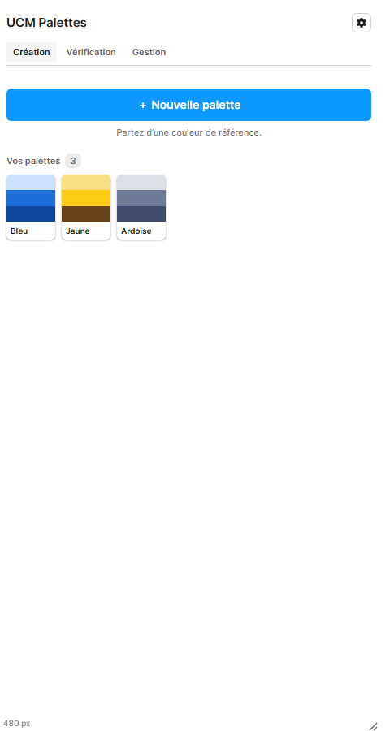
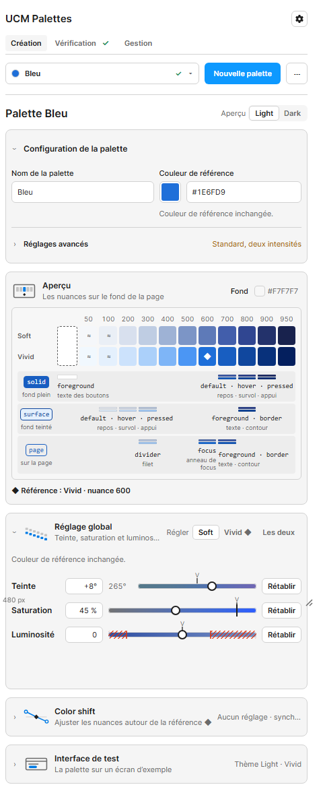
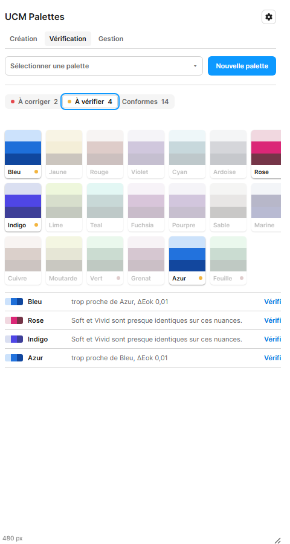

Trois tâches sur plusieurs palettes, pensées depuis le plugin tel qu'il est. La maquette pose d'abord l'existant, puis dix briques d'interface, puis trois parcours qui les combinent. Couleurs : la recette du mainteneur. Styles : ceux du plugin, tirés de la galerie. Le dossier qui détaille chaque règle est DOSSIER-COMPARER.md.
| Tâche | Question du designer | Ce qui la rend difficile aujourd'hui |
|---|---|---|
| Comparer | Mes palettes vont-elles ensemble, cran par cran et sur des composants ? | Création et Vérification montrent une palette à la fois ; le nuancier montre trois aplats par palette. |
| Harmoniser | Comment rendre la clarté et la saturation de mes statuts identiques ? | Chaque réglage est propre à une palette ; recopier une valeur ne donne pas la même couleur ; rien ne dit qu'une palette s'est écartée. |
| Différencier | Deux statuts se ressemblent : lequel déplacer, de combien, dans quel sens ? | L'alerte « trop proche » compare les crans 500 à 700 en Light et propose seulement de changer la référence. |
Le nuancier montre chaque palette par trois aplats. Un clic ouvre une seule palette.

« Régler » choisit Soft, Vivid ou les deux. Chaque réglette porte le repère de l'autre profil et hachure ses limites. « Rétablir » remet la valeur commune.

Le bilan filtre le nuancier. « Trop proche de Azur, ΔEok 0,01 » renvoie à la palette, et le message propose de changer la référence.

Chaque brique est un changement d'interface autonome. Les parcours de la section suivante en choisissent quelques-unes. Les numéros servent de renvoi.
On compare et on harmonise là où l'on règle. Aucun onglet, aucun groupe, aucune modale.
Un espace dédié à l'ensemble. Création reste à une palette.
Prévenir plutôt que corriger, et ne rien ajouter d'autre.
| Critère | P1 · Création | P2 · Onglet | P3 · Minimum |
|---|---|---|---|
| Comparer sur des composants | Oui, interface de test de la sélection | Oui, vue d'ensemble | Non : roue et paires seulement |
| Voir l'écart pendant le réglage | Oui, sans changer d'onglet | Après, en changeant d'onglet | Après, dans Vérification |
| Harmoniser | Geste direct : une valeur pour la sélection | Modale avant et après | Retour au préréglage, palette par palette ou toutes |
| Différencier | Repères et suggestion sur la réglette de teinte | Modale avec roue et suggestions | Carte Distinguer et suggestions |
| Notions nouvelles pour le designer | Une : la sélection multiple, idiome de Figma | Deux : un onglet, des modales | Une : le préréglage |
| Surface ajoutée | Aucun écran ; trois cartes apprennent la sélection | Un onglet et deux modales | Une carte |
| Passe à vingt palettes | Oui, une ligne par palette, un profil à la fois | Oui, avec le filtre | Oui |
| Coût d'implémentation | Élevé : Création suppose une palette ouverte partout | Moyen : un module isolé | Faible |
| Risque de régression | Plus élevé, sur l'onglet le plus dense | Faible | Faible |
| # | Décision | Proposition |
|---|---|---|
| C1 | Le parcours | P1, livré en deux temps : B1, B7 et B10 d'abord (le socle de P3), puis la sélection multiple. P2 si la sélection multiple coûte trop à Création. |
| C2 | Le préréglage | Clarté, saturation et Color shift de luminosité et de saturation suivent le préréglage des réglages communs ; une palette qui s'en écarte est « Personnalisée ». La teinte reste propre à chaque palette. |
| C3 | La sélection | Éphémère, comme une sélection dans Figma : aucun groupe, rien dans la recette. |
| C4 | Régler plusieurs palettes | Une valeur saisie s'applique à toute la sélection ; « Mixte » sinon. La teinte ne se règle qu'une palette à la fois. |
| C5 | Ce qui compte comme écart | Une palette personnalisée, et une paire qui se confond sur un rôle suivi, en vision normale. Le reste s'affiche en information. |
| C6 | Différencier | La plus petite rotation de teinte qui sépare la paire, nommée par le secteur visé ; jamais appliquée sans le designer. |
| C7 | La vision des couleurs | Une simulation à la demande dans la vue Teintes, sans alerte : aucun réglage de couleur ne la corrige seul. |